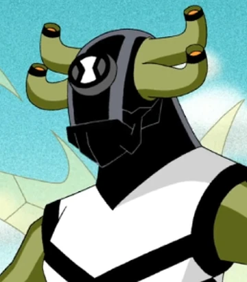

Insectoide

| Poderes | Fraquezas |
|---|---|
| Possui asas que permitem voar em alta velocidade. | Suas asas podem ser prejudicadas quando molhadas. |
| Dispara gosma capaz de prender e imobilizar adversários. | Seu porte físico oferece menor resistência contra ataques poderosos. |
| Possui ferrão afiado, garras e visão aprimorada. | Seu voo depende da integridade de suas asas. |
Sobre sua raça
Os Lepidopterranos são uma espécie alienígena do planeta Lepidopterra, formada por seres humanoides com características semelhantes às de insetos voadores. Possuem quatro pernas, dois braços, quatro olhos posicionados em estruturas móveis, grandes asas transparentes e uma cauda terminada em um ferrão pontiagudo. Seu corpo apresenta um exoesqueleto resistente, geralmente em tons de verde, além de uma aparência adaptada para o voo. São conhecidos pela capacidade de voar em alta velocidade, utilizando suas asas para pairar e transportar objetos muito mais pesados que seu próprio corpo. Além disso, conseguem disparar diferentes tipos de toxinas químicas e gosmas pegajosas pela boca e pelos olhos, utilizadas para imobilizar adversários, apagar chamas e afastar ameaças. Também possuem força, resistência, agilidade e reflexos aprimorados, visão de 360 graus, audição aguçada e capacidade de liberar gases tóxicos e inflamáveis.